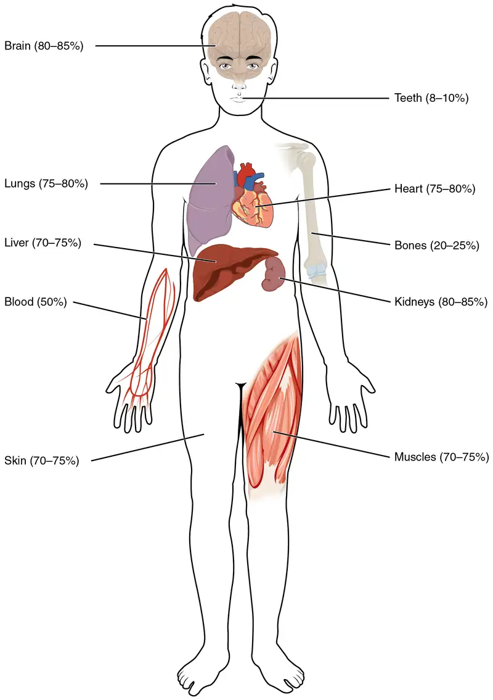
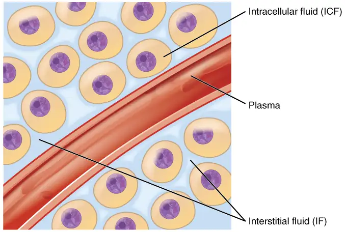
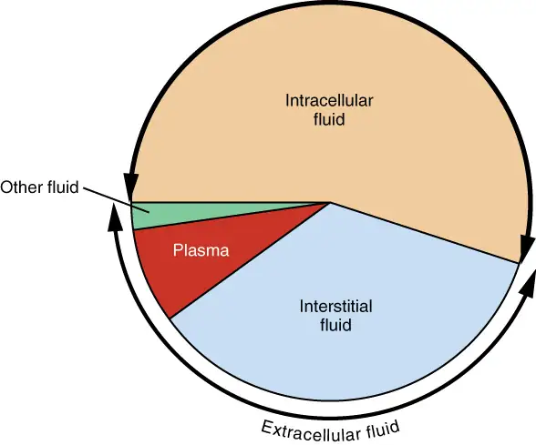
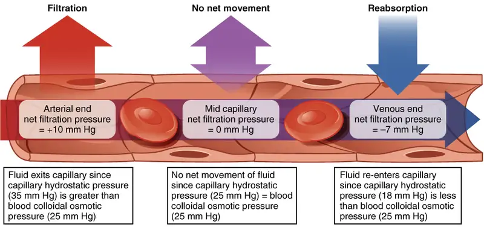
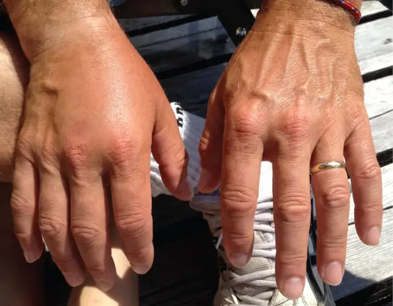
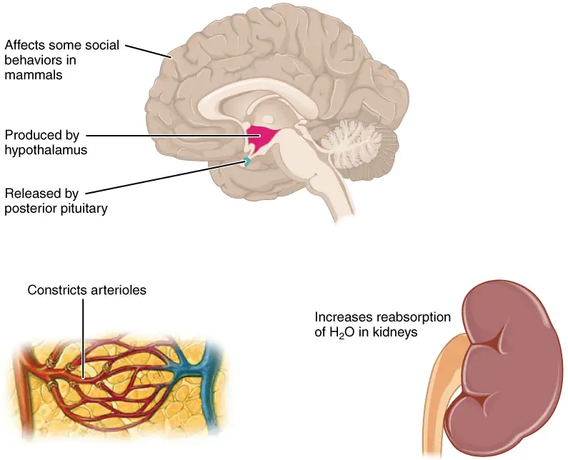

Chapter 26: Fluid, Electrolyte, and Acid-Base Balance¶
Introduction¶
Chapter Outline: Chapter Objectives
After studying this chapter, you will be able to:
- Identify the body’s main fluid compartments
- Define plasma osmolality and identify two ways in which plasma osmolality is maintained
- Identify the six ions most important to the function of the body
- Define buffer and discuss the role of buffers in the body
- Explain why bicarbonate must be conserved rather than reabsorbed in the kidney
- Identify the normal range of blood pH and name the conditions where one has a blood pH that is either too high or too low
Homeostasis, or the maintenance of constant conditions in the body, is a fundamental property of all living things. In the human body, the substances that participate in chemical reactions must remain within narrows ranges of concentration. Too much or too little of a single substance can disrupt your bodily functions. Because metabolism relies on reactions that are all interconnected, any disruption might affect multiple organs or even organ systems. Water is the most ubiquitous substance in the chemical reactions of life. The interactions of various aqueous solutions—solutions in which water is the solvent—are continuously monitored and adjusted by a large suite of interconnected feedback systems in your body. Understanding the ways in which the body maintains these critical balances is key to understanding good health.
26.1 Body Fluids and Fluid Compartments¶
Learning Objectives
By the end of this section, you will be able to:
- Explain the importance of water in the body
- Contrast the composition of the intracellular fluid with that of the extracellular fluid
- Explain the importance of protein channels in the movement of solutes
- Identify the causes and symptoms of edema
The chemical reactions of life take place in aqueous solutions. The dissolved substances in a solution are called solutes. In the human body, solutes vary in different parts of the body, but may include proteins—including those that transport lipids, carbohydrates, and, very importantly, electrolytes. Often in medicine, a mineral dissociated from a salt that carries an electrical charge (an ion) is called an electrolyte. For instance, sodium ions (Na+) and chloride ions (Cl-) are often referred to as electrolytes.
In the body, water moves through semi-permeable membranes of cells and from one compartment of the body to another by a process called osmosis. Osmosis is basically the diffusion of water from regions of higher concentration of water to regions of lower concentration of water, along an osmotic gradient across a semi-permeable membrane. As a result, water will move into and out of cells and tissues, depending on the relative concentrations of the water and solutes found there. An appropriate balance of solutes inside and outside of cells must be maintained to ensure normal function.
Body Water Content¶
Human beings are mostly water, ranging from about 75 percent of body mass in infants to about 50–60 percent in adults, to as low as 45 percent in old age. The percent of body water changes with development, because the proportions of the body given over to each organ and to muscles, fat, bone, and other tissues change from infancy to adulthood (Figure 26.2). Your brain and kidneys have the highest proportions of water, which composes 80–85 percent of their masses. In contrast, teeth have the lowest proportion of water, at 8–10 percent.

Fluid Compartments¶
Body fluids can be discussed in terms of their specific fluid compartment, a location that is largely separate from another compartment by some form of a physical barrier. The intracellular fluid (ICF) compartment is the system that includes all fluid enclosed in cells by their plasma membranes. Extracellular fluid (ECF) surrounds all cells in the body. Extracellular fluid has two primary constituents: the fluid component of the blood (called plasma) and the interstitial fluid (IF) that surrounds all cells not in the blood (Figure 26.3).

Intracellular Fluid¶
The ICF lies within cells and is the principal component of the cytosol/cytoplasm. The ICF makes up about 60 percent of the total water in the human body, and in an average-size adult male, the ICF accounts for about 25 liters (seven gallons) of fluid (Figure 26.4). This fluid volume tends to be very stable, because the amount of water in living cells is closely regulated. If the amount of water inside a cell falls to a value that is too low, the cytosol becomes too concentrated with solutes to carry on normal cellular activities; if too much water enters a cell, the cell may burst and be destroyed.

Extracellular Fluid¶
The ECF accounts for the other one-third of the body’s water content. Approximately 20 percent of the ECF is found in plasma. Plasma travels through the body in blood vessels and transports a range of materials, including blood cells, proteins (including clotting factors and antibodies), electrolytes, nutrients, gases, and wastes. Gases, nutrients, and waste materials travel between capillaries and cells through the IF. Cells are separated from the IF by a selectively permeable cell membrane that helps regulate the passage of materials between the IF and the interior of the cell.
The body has other water-based ECF. These include the cerebrospinal fluid that bathes the brain and spinal cord, lymph, the synovial fluid in joints, the pleural fluid in the pleural cavities, the pericardial fluid in the cardiac sac, the peritoneal fluid in the peritoneal cavity, and the aqueous humor of the eye. Because these fluids are outside of cells, these fluids are also considered components of the ECF compartment.
Composition of Body Fluids¶
The compositions of the two components of the ECF—plasma and IF—are more similar to each other than either is to the ICF (Figure 26.5). Blood plasma has high concentrations of sodium, chloride, bicarbonate, and protein. The IF has high concentrations of sodium, chloride, and bicarbonate, but a relatively lower concentration of protein. In contrast, the ICF has elevated amounts of potassium, phosphate, magnesium, and protein. Overall, the ICF contains high concentrations of potassium and phosphate (\(\text{HPO}_{4}^{2-}\)), whereas both plasma and the ECF contain high concentrations of sodium and chloride.
![This bar graph shows the concentration of several ions and proteins in intracellular fluid, interstitial fluid and plasma. The ions and proteins are categories on the X axis . The Y axis shows concentration, in milliequivalents per liter, ranging from zero to 160. Three different colored bars are shown above each compound on the X axis. One bar represents intracellular fluid (ICF), a second bar represents interstitial fluid (IF, which is part of ECF) and the third bar represents plasma (ECF). Intracellular fluid contains high concentrations of K plus and HPO four two minus. It has lower concentrations of MG two plus and protein, and negligible amounts of the other compounds. Interstitial fluid contains high concentrations of NA plus and CL minus, along with a smaller amount of HCO 3 minus, and negligible amounts of the other compounds. Plasma contains large concentrations of NA plus and CL minus, with smaller concentrations of HCO 3 minus and protein, and negligible amounts of the other compounds.](img/2704-concentration-of-elements-in-body-fluids.webp)
Interactive
Watch this video to learn more about body fluids, fluid compartments, and electrolytes. When blood volume decreases due to sweating, from what source is water taken in by the blood?
Most body fluids are neutral in charge. Thus, cations, or positively charged ions, and anions, or negatively charged ions, are balanced in fluids. As seen in the previous graph, sodium (Na+) ions and chloride (Cl-) ions are concentrated in the ECF of the body, whereas potassium (K+) ions are concentrated inside cells. Although sodium and potassium can “leak” through “pores” into and out of cells, respectively, the high levels of potassium and low levels of sodium in the ICF are maintained by sodium-potassium pumps in the cell membranes. These pumps use the energy supplied by ATP to pump sodium out of the cell and potassium into the cell (Figure 26.6).
![This diagram shows a sodium potassium pump embedded in the cell membrane. In the first step, the pump is opened to the cytosol and closed to the extracellular fluid. First, three sodium ions move into the pump from the cytosol. An ATP molecule binds to the cytosol side of the pump, causing the pump to change shape and open to the extracellular fluid. The pump is now closed to the cytosol. The sodium ions are then released into the extracellular fluid, after which two potassium ions enter the pump. Also at this point, the used ADP detaches from the cytosol side of the pump, leaving a single phosphate attached. The pump then changes shape again so that it closes to the extracellular fluid and again opens to the cytosol. This releases the two potassium ions into the cytosol. The single phosphate also detaches from the pump at this point so that the cycle can start anew. Two bars along the right hand side of the figure indicate that sodium normally diffuses into the cell down its concentration gradient while potassium usually diffuses out of the cell down its concentration gradient. Therefore, the sodium potassium pump is working against these natural concentration gradients.](img/2705-sodium-potassium-pump.webp)
Fluid Movement between Compartments¶
Hydrostatic pressure, the force exerted by a fluid against a wall, causes movement of fluid between compartments. The hydrostatic pressure of blood is the pressure exerted by blood against the walls of the blood vessels by the pumping action of the heart. In capillaries, hydrostatic pressure (also known as capillary blood pressure) is higher than the opposing “colloid osmotic pressure” in blood—a “constant” pressure primarily produced by circulating albumin—at the arteriolar end of the capillary (Figure 26.7). This pressure forces plasma and nutrients out of the capillaries and into surrounding tissues. Fluid and the cellular wastes in the tissues enter the capillaries at the venule end, where the hydrostatic pressure is less than the osmotic pressure in the vessel. Filtration pressure squeezes fluid from the plasma in the blood to the IF surrounding the tissue cells. The surplus fluid in the interstitial space that is not returned directly back to the capillaries is drained from tissues by the lymphatic system, and then re-enters the vascular system at the subclavian veins.

Interactive
Watch this video to see an explanation of the dynamics of fluid in the body’s compartments. What happens in the tissue when capillary blood pressure is less than osmotic pressure?
Hydrostatic pressure is especially important in governing the movement of water in the nephrons of the kidneys to ensure proper filtering of the blood to form urine. As hydrostatic pressure in the kidneys increases, the amount of water leaving the capillaries also increases, and more urine filtrate is formed. If hydrostatic pressure in the kidneys drops too low, as can happen in dehydration, the functions of the kidneys will be impaired, and less nitrogenous wastes will be removed from the bloodstream. Extreme dehydration can result in kidney failure.
Fluid also moves between compartments along an osmotic gradient. Recall that an osmotic gradient is produced by the difference in concentration of all solutes on either side of a semi-permeable membrane. The magnitude of the osmotic gradient is proportional to the difference in the concentration of solutes on one side of the cell membrane to that on the other side. Water will move by osmosis from the side where its concentration is high (and the concentration of solute is low) to the side of the membrane where its concentration is low (and the concentration of solute is high). In the body, water moves by osmosis from plasma to the IF (and the reverse) and from the IF to the ICF (and the reverse). In the body, water moves constantly into and out of fluid compartments as conditions change in different parts of the body.
For example, if you are sweating, you will lose water through your skin. Sweating depletes your tissues of water and increases the solute concentration in those tissues. As this happens, water diffuses from your blood into sweat glands and surrounding skin tissues that have become dehydrated because of the osmotic gradient. Additionally, as water leaves the blood, it is replaced by the water in other tissues throughout your body that are not dehydrated. If this continues, dehydration spreads throughout the body. When a dehydrated person drinks water and rehydrates, the water is redistributed by the same gradient, but in the opposite direction, replenishing water in all of the tissues.
Solute Movement between Compartments¶
The movement of some solutes between compartments is active, which consumes energy and is an active transport process, whereas the movement of other solutes is passive, which does not require energy. Active transport allows cells to move a specific substance against its concentration gradient through a membrane protein, requiring energy in the form of ATP. For example, the sodium-potassium pump employs active transport to pump sodium out of cells and potassium into cells, with both substances moving against their concentration gradients.
Passive transport of a molecule or ion depends on its ability to pass through the membrane, as well as the existence of a concentration gradient that allows the molecules to diffuse from an area of higher concentration to an area of lower concentration. Some molecules, like gases, lipids, and water itself (which also utilizes water channels in the membrane called aquaporins), slip fairly easily through the cell membrane; others, including polar molecules like glucose, amino acids, and ions do not. Some of these molecules enter and leave cells using facilitated transport, whereby the molecules move down a concentration gradient through specific protein channels in the membrane. This process does not require energy. For example, glucose is transferred into cells by glucose transporters that use facilitated transport (Figure 26.8).
![This diagram shows a carrier protein embedded in the plasma membrane between the cytoplasm and the extracellular fluid. There are several glucose molecules in the extracellular fluid. In the first step, the carrier protein is open to the extracellular fluid and closed to the cytosol. One of the glucose molecules travels from the extracellular fluid into the carrier protein. The protein then changes shape, closing at both ends. This pushes the glucose down into the carrier protein, closer to the cytosol end. The protein then opens on the cytosol side and closes on the extracellular fluid side, allowing the glucose to enter the cytosol.](img/2706-facilitated-diffusion.webp)
Disorders of the Fluid Balance: Edema
Edema is the accumulation of excess water in the tissues. It is most common in the soft tissues of the extremities. The physiological causes of edema include water leakage from blood capillaries. Edema is almost always caused by an underlying medical condition, by the use of certain therapeutic drugs, by pregnancy, by localized injury, or by an allergic reaction. In the limbs, the symptoms of edema include swelling of the subcutaneous tissues, an increase in the normal size of the limb, and stretched, tight skin. One quick way to check for subcutaneous edema localized in a limb is to press a finger into the suspected area. Edema is likely if the depression persists for several seconds after the finger is removed (which is called “pitting”).
Pulmonary edema is excess fluid in the air sacs of the lungs, a common symptom of heart and/or kidney failure. People with pulmonary edema likely will experience difficulty breathing, and they may experience chest pain. Pulmonary edema can be life threatening, because it compromises gas exchange in the lungs, and anyone having symptoms should immediately seek medical care.
In pulmonary edema resulting from heart failure, excessive leakage of water occurs because fluids get “backed up” in the pulmonary capillaries of the lungs, when the left ventricle of the heart is unable to pump sufficient blood into the systemic circulation. Because the left side of the heart is unable to pump out its normal volume of blood, the blood in the pulmonary circulation gets “backed up,” starting with the left atrium, then into the pulmonary veins, and then into pulmonary capillaries. The resulting increased hydrostatic pressure within pulmonary capillaries, as blood is still coming in from the pulmonary arteries, causes fluid to be pushed out of them and into lung tissues.
Other causes of edema include damage to blood vessels and/or lymphatic vessels, or a decrease in osmotic pressure in chronic and severe liver disease, where the liver is unable to manufacture plasma proteins (Figure 26.9). A decrease in the normal levels of plasma proteins results in a decrease of colloid osmotic pressure (which counterbalances the hydrostatic pressure) in the capillaries. This process causes loss of water from the blood to the surrounding tissues, resulting in edema.

Mild, transient edema of the feet and legs may be caused by sitting or standing in the same position for long periods of time, as in the work of a toll collector or a supermarket cashier. This is because deep veins in the lower limbs rely on skeletal muscle contractions to push on the veins and thus “pump” blood back to the heart. Otherwise, the venous blood pools in the lower limbs and can leak into surrounding tissues.
Medications that can result in edema include vasodilators, calcium channel blockers used to treat hypertension, non-steroidal anti-inflammatory drugs, estrogen therapies, and some diabetes medications. Underlying medical conditions that can contribute to edema include congestive heart failure, kidney damage and kidney disease, disorders that affect the veins of the legs, and cirrhosis and other liver disorders.
Therapy for edema usually focuses on elimination of the cause. Activities that can reduce the effects of the condition include appropriate exercises to keep the blood and lymph flowing through the affected areas. Other therapies include elevation of the affected part to assist drainage, massage and compression of the areas to move the fluid out of the tissues, and decreased salt intake to decrease sodium and water retention.
26.2 Water Balance¶
Learning Objectives
By the end of this section, you will be able to:
- Explain how water levels in the body influence the thirst cycle
- Identify the main route by which water leaves the body
- Describe the role of ADH and its effect on body water levels
- Define dehydration and identify common causes of dehydration
On a typical day, the average adult will take in about 2500 mL (almost 3 quarts) of aqueous fluids. Although most of the intake comes through the digestive tract, about 230 mL (8 ounces) per day is generated metabolically, in the last steps of aerobic respiration. Additionally, each day about the same volume (2500 mL) of water leaves the body by different routes; most of this lost water is removed as urine. The kidneys also can adjust blood volume though mechanisms that draw water out of the filtrate and urine. The kidneys can regulate water levels in the body; they conserve water if you are dehydrated, and they can make urine more dilute to expel excess water if necessary. Water is lost through the skin through evaporation from the skin surface without overt sweating and from air expelled from the lungs. This type of water loss is called insensible water loss because a person is usually unaware of it.
Regulation of Water Intake¶
Osmolality is the ratio of solutes in a solution to a volume of solvent in a solution. Plasma osmolality is thus the ratio of solutes to water in blood plasma. A person’s plasma osmolality value reflects the state of hydration. A healthy body maintains plasma osmolality within a narrow range, by employing several mechanisms that regulate both water intake and output.
Drinking water is considered voluntary. So how is water intake regulated by the body? Consider someone who is experiencing dehydration, a net loss of water that results in insufficient water in blood and other tissues. The water that leaves the body, as exhaled air, sweat, or urine, is ultimately extracted from blood plasma. As the blood becomes more concentrated, the thirst response—a sequence of physiological processes—is triggered (Figure 26.10). Osmoreceptors are sensory receptors in the thirst center in the hypothalamus that monitor the concentration of solutes (osmolality) of the blood. If blood osmolality increases above its ideal value, the hypothalamus transmits signals that result in a conscious awareness of thirst. The person should (and normally does) respond by drinking water. The hypothalamus of a dehydrated person also releases antidiuretic hormone (ADH) through the posterior pituitary gland. ADH signals the kidneys to recover water from urine, effectively diluting the blood plasma. To conserve water, the hypothalamus of a dehydrated person also sends signals via the sympathetic nervous system to the salivary glands in the mouth. The signals result in a decrease in watery, serous output (and an increase in stickier, thicker mucus output). These changes in secretions result in a “dry mouth” and the sensation of thirst.
![This figure is a top-to bottom flowchart describing the thirst response. The topmost box of the chart states that there is insufficient water in the body, which has two effects. The left branch of the chart leads to decreased blood volume, which leads to decreased blood pressure. This triggers an increase in angiotensin two. Angiotensin two stimulates the thirst center in the hypothalamus. On the right branch, insufficient water in the body leads to increased blood osmolality, which causes dry mouth. Increased blood osmolality and dry mouth is sensed by osmoreceptors in the hypothalamus. This stimulates the thirst center in the hypothalamus to increase thirst, giving a person the urge to drink. Drinking decreases blood osmolality back to homeostatic levels.](img/2708-flowchart-of-thirst-response.webp)
Decreased blood volume resulting from water loss has two additional effects. First, baroreceptors, blood-pressure receptors in the arch of the aorta and the carotid arteries in the neck, detect a decrease in blood pressure that results from decreased blood volume. The heart is ultimately signaled to increase its rate and/or strength of contractions to compensate for the lowered blood pressure.
Second, the kidneys have a renin-angiotensin hormonal system that increases the production of the active form of the hormone angiotensin II, which helps stimulate thirst, but also stimulates the release of the hormone aldosterone from the adrenal glands. Aldosterone increases the reabsorption of sodium in the distal tubules of the nephrons in the kidneys, and water follows this reabsorbed sodium back into the blood.
If adequate fluids are not consumed, dehydration results and a person’s body contains too little water to function correctly. A person who repeatedly vomits or who has diarrhea may become dehydrated, and infants, because their body mass is so low, can become dangerously dehydrated very quickly. Endurance athletes such as distance runners often become dehydrated during long races. Dehydration can be a medical emergency, and a dehydrated person may lose consciousness, become comatose, or die, if their body is not rehydrated quickly.
Regulation of Water Output¶
Water loss from the body occurs predominantly through the renal system. A person produces an average of 1.5 liters (1.6 quarts) of urine per day. Although the volume of urine varies in response to hydration levels, there is a minimum volume of urine production required for proper bodily functions. The kidney excretes 100 to 1200 milliosmoles of solutes per day to rid the body of a variety of excess salts and other water-soluble chemical wastes, most notably creatinine, urea, and uric acid. Failure to produce the minimum volume of urine means that metabolic wastes cannot be effectively removed from the body, a situation that can impair organ function. The minimum level of urine production necessary to maintain normal function is about 0.47 liters (0.5 quarts) per day.
The kidneys also must make adjustments in the event of ingestion of too much fluid. Diuresis, which is the production of urine in excess of normal levels, begins about 30 minutes after drinking a large quantity of fluid. Diuresis reaches a peak after about 1 hour, and normal urine production is reestablished after about 3 hours.
Role of ADH¶
Antidiuretic hormone (ADH), also known as vasopressin, controls the amount of water reabsorbed from the collecting ducts and tubules in the kidney. This hormone is produced in the hypothalamus and is delivered to the posterior pituitary for storage and release (Figure 26.11). When the osmoreceptors in the hypothalamus detect an increase in the concentration of blood plasma, the hypothalamus signals the release of ADH from the posterior pituitary into the blood.

ADH has two major effects. It constricts the arterioles in the peripheral circulation, which reduces the flow of blood to the extremities and thereby increases the blood supply to the core of the body. ADH also causes the epithelial cells that line the renal collecting tubules to move water channel proteins, called aquaporins, from the interior of the cells to the apical surface, where these proteins are inserted into the cell membrane (Figure 26.12). The result is an increase in the water permeability of these cells and, thus, a large increase in water passage from the urine through the walls of the collecting tubules, leading to more reabsorption of water into the bloodstream. When the blood plasma becomes less concentrated and the level of ADH decreases, aquaporins are removed from collecting tubule cell membranes, and the passage of water out of urine and into the blood decreases.
![This diagram depicts a cross section of the right wall of a kidney collecting tubule. The wall is composed of three block-shaped cells arranged vertically one on top of each other. The lumen of the collecting tubule is to the left of the three cells. Yellow-colored urine is flowing through the lumen. There is a small strip of blue interstitial fluid to the right of the three cells. To the right of the interstitial fluid is a cross section of a blood vessel. Arrows show that water in the urine is entering the left side of the wall cells through aquaporins. The water travels through the cells and then leaves the kidney tubule through additional aquaporins in the right side of the wall cells. The water travels through the interstitial space and enters into the blood in the blood vessel. The aquaporins in the wall cells are being released from aquaporin storage vesicles within their cytoplasm.](img/2710-aquaporins-01.webp)
A diuretic is a compound that increases urine output and therefore decreases water conservation by the body. Diuretics are used to treat hypertension, congestive heart failure, and fluid retention associated with menstruation. Alcohol acts as a diuretic by inhibiting the release of ADH. Additionally, caffeine, when consumed in high concentrations, acts as a diuretic.
26.3 Electrolyte Balance¶
Learning Objectives
By the end of this section, you will be able to:
- List the role of the six most important electrolytes in the body
- Name the disorders associated with abnormally high and low levels of the six electrolytes
- Identify the predominant extracellular anion
- Describe the role of aldosterone on the level of water in the body
The body contains a large variety of ions, or electrolytes, which perform a variety of functions. Some ions assist in the transmission of electrical impulses along cell membranes in neurons and muscles. Other ions help to stabilize protein structures in enzymes. Still others aid in releasing hormones from endocrine glands. All of the ions in plasma contribute to the osmotic balance that controls the movement of water between cells and their environment.
Electrolytes in living systems include sodium, potassium, chloride, bicarbonate, calcium, phosphate, magnesium, copper, zinc, iron, manganese, molybdenum, copper, and chromium. In terms of body functioning, six electrolytes are most important: sodium, potassium, chloride, bicarbonate, calcium, and phosphate.
Roles of Electrolytes¶
These six ions aid in nerve excitability, endocrine secretion, membrane permeability, buffering body fluids, and controlling the movement of fluids between compartments. These ions enter the body through the digestive tract. More than 90 percent of the calcium and phosphate that enters the body is incorporated into bones and teeth, with bone serving as a mineral reserve for these ions. In the event that calcium and phosphate are needed for other functions, bone tissue can be broken down to supply the blood and other tissues with these minerals. Phosphate is a normal constituent of nucleic acids; hence, blood levels of phosphate will increase whenever nucleic acids are broken down.
Excretion of ions occurs mainly through the kidneys, with lesser amounts lost in sweat and in feces. Excessive sweating may cause a significant loss, especially of sodium and chloride. Severe vomiting or diarrhea will cause a loss of chloride and bicarbonate ions. Adjustments in respiratory and renal functions allow the body to regulate the levels of these ions in the ECF.
Table 26.1 lists the reference values for blood plasma, cerebrospinal fluid (CSF), and urine for the six ions addressed in this section. In a clinical setting, sodium, potassium, and chloride are typically analyzed in a routine urine sample. In contrast, calcium and phosphate analysis requires a collection of urine across a 24-hour period, because the output of these ions can vary considerably over the course of a day. Urine values reflect the rates of excretion of these ions. Bicarbonate is the one ion that is not normally excreted in urine; instead, it is conserved by the kidneys for use in the body’s buffering systems.
Table 26.1
| Electrolyte and Ion Reference Values | ||||
|---|---|---|---|---|
| Name | Chemical symbol | Plasma | CSF | Urine |
| Sodium | Na+ | 136.00–146.00 (mM) | 138.00–150.00 (mM) | 40.00–220.00 (mM) |
| Potassium | K+ | 3.50–5.00 (mM) | 0.35–3.5 (mM) | 25.00–125.00 (mM) |
| Chloride | Cl- | 98.00–107.00 (mM) | 118.00–132.00 (mM) | 110.00–250.00 (mM) |
| Bicarbonate | HCO3- | 22.00–29.00 (mM) | ------ | ------ |
| Calcium | Ca++ | 2.15–2.55 (mmol/day) | ------ | Up to 7.49 (mmol/day) |
| Phosphate | \(\text{HPO}_{4}^{2-}\) | 0.81–1.45 (mmol/day) | ------ | 12.90–42.00 (mmol/day) |
Sodium¶
Sodium is the major cation of the extracellular fluid. It is responsible for one-half of the osmotic pressure gradient that exists between the interior of cells and their surrounding environment. People eating a typical Western diet, which is very high in NaCl, routinely take in 3,400 mg/day of sodium, but humans require less than 2,300 mg/day. This excess sodium appears to be a major factor in hypertension (high blood pressure) in some people. Excretion of sodium is accomplished primarily by the kidneys. Sodium is freely filtered through the glomerular capillaries of the kidneys, and although much of the filtered sodium is reabsorbed in the proximal convoluted tubule, some remains in the filtrate and urine, and is normally excreted.
Hyponatremia is a lower-than-normal concentration of sodium, usually associated with excess water accumulation in the body, which dilutes the sodium. An absolute loss of sodium may be due to a decreased intake of the ion coupled with its continual excretion in the urine. An abnormal loss of sodium from the body can result from several conditions, including excessive sweating, vomiting, or diarrhea; the use of diuretics; excessive production of urine, which can occur in diabetes; and acidosis, either metabolic acidosis or diabetic ketoacidosis.
A relative decrease in blood sodium can occur because of an imbalance of sodium in one of the body’s other fluid compartments, like IF, or from a dilution of sodium due to water retention related to edema or congestive heart failure. At the cellular level, hyponatremia results in increased entry of water into cells by osmosis, because the concentration of solutes within the cell exceeds the concentration of solutes in the now-diluted ECF. The excess water causes swelling of the cells; the swelling of red blood cells—decreasing their oxygen-carrying efficiency and making them potentially too large to fit through capillaries—along with the swelling of neurons in the brain can result in brain damage or even death.
Hypernatremia is an abnormal increase of blood sodium. It can result from water loss from the blood, resulting in the hemoconcentration of all blood constituents. Hormonal imbalances involving ADH and aldosterone may also result in higher-than-normal sodium values.
Potassium¶
Potassium is the major intracellular cation. It helps establish the resting membrane potential in neurons and muscle fibers after membrane depolarization and action potentials. In contrast to sodium, potassium has very little effect on osmotic pressure. The low levels of potassium in blood and CSF are due to the sodium-potassium pumps in cell membranes, which maintain the normal potassium concentration gradients between the ICF and ECF. The recommendation for daily intake/consumption of potassium is 4700 mg. Potassium is excreted, both actively and passively, through the renal tubules, especially the distal convoluted tubule and collecting ducts. Potassium participates in the exchange with sodium in the renal tubules under the influence of aldosterone, which also relies on basolateral sodium-potassium pumps.
Hypokalemia is an abnormally low potassium blood level. Similar to the situation with hyponatremia, hypokalemia can occur because of either an absolute reduction of potassium in the body or a relative reduction of potassium in the blood due to the redistribution of potassium. An absolute loss of potassium can arise from decreased intake, frequently related to starvation. It can also come about from vomiting, diarrhea, or alkalosis.
Some insulin-dependent diabetic patients experience a relative reduction of potassium in the blood from the redistribution of potassium. When insulin is administered and glucose is taken up by cells, potassium passes through the cell membrane along with glucose, decreasing the amount of potassium in the blood and IF, which can cause hyperpolarization of the cell membranes of neurons, reducing their responses to stimuli.
Hyperkalemia, an elevated potassium blood level, also can impair the function of skeletal muscles, the nervous system, and the heart. Hyperkalemia can result from increased dietary intake of potassium. In such a situation, potassium from the blood ends up in the ECF in abnormally high concentrations. This can result in a partial depolarization (excitation) of the plasma membrane of skeletal muscle fibers, neurons, and cardiac cells of the heart, and can also lead to an inability of cells to repolarize. For the heart, this means that it won’t relax after a contraction, and will effectively “seize” and stop pumping blood, which is fatal within minutes. Because of such effects on the nervous system, a person with hyperkalemia may also exhibit mental confusion, numbness, and weakened respiratory muscles.
Chloride¶
Chloride is the predominant extracellular anion. Chloride is a major contributor to the osmotic pressure gradient between the ICF and ECF, and plays an important role in maintaining proper hydration. Chloride functions to balance cations in the ECF, maintaining the electrical neutrality of this fluid. The paths of secretion and reabsorption of chloride ions in the renal system follow the paths of sodium ions.
Hypochloremia, or lower-than-normal blood chloride levels, can occur because of defective renal tubular absorption. Vomiting, diarrhea, and metabolic acidosis can also lead to hypochloremia. Hyperchloremia, or higher-than-normal blood chloride levels, can occur due to dehydration, excessive intake of dietary salt (NaCl) or swallowing of sea water, aspirin intoxication, congestive heart failure, and the hereditary, chronic lung disease, cystic fibrosis. In people who have cystic fibrosis, chloride levels in sweat are two to five times those of normal levels, and analysis of sweat is often used in the diagnosis of the disease.
Interactive
Read this article for an explanation of the effect of seawater on humans. What effect does drinking seawater have on the body?
Bicarbonate¶
Bicarbonate is the second most abundant anion in the blood. Its principal function is to maintain your body’s acid-base balance by being part of buffer systems. This role will be discussed in a different section.
Bicarbonate ions result from a chemical reaction that starts with carbon dioxide (CO2) and water, two molecules that are produced at the end of aerobic metabolism. Only a small amount of CO2 can be dissolved in body fluids. Thus, over 90 percent of the CO2 is converted into bicarbonate ions, HCO3–, through the following reactions:
The bidirectional arrows indicate that the reactions can go in either direction, depending on the concentrations of the reactants and products. Carbon dioxide is produced in large amounts in tissues that have a high metabolic rate. Carbon dioxide is converted into bicarbonate in the cytoplasm of red blood cells through the action of an enzyme called carbonic anhydrase. Bicarbonate is transported in the blood. Once in the lungs, the reactions reverse direction, and CO2 is regenerated from bicarbonate to be exhaled as metabolic waste.
Calcium¶
The body contains about 1,200 g of calcium for women and 1,400 g of calcium for men, the majority of which is bound up in bone, which provides hardness to the bone and serves as a mineral reserve for calcium and its salts for the rest of the tissues. Teeth also have a high concentration of calcium within them. A little more than one-half of blood calcium is bound to proteins, leaving the rest in its ionized form. Calcium ions, Ca2+, are necessary for muscle contraction, enzyme activity, and blood coagulation. In addition, calcium helps to stabilize cell membranes and is essential for the release of neurotransmitters from neurons and of hormones from endocrine glands.
Calcium is absorbed through the intestines under the influence of activated vitamin D. A deficiency of vitamin D leads to a decrease in absorbed calcium and, eventually, a depletion of calcium stores from the skeletal system, potentially leading to rickets in children and osteomalacia in adults, contributing to osteoporosis.
Hypocalcemia, or abnormally low calcium blood levels, is seen in hypoparathyroidism, which may follow the removal of the thyroid gland, because the four nodules of the parathyroid gland are embedded in it. Hypercalcemia, or abnormally high calcium blood levels, is seen in primary hyperparathyroidism. Some malignancies may also result in hypercalcemia.
Phosphate¶
Phosphate is present in the body in three ionic forms: \(\text{H}_{2}\text{PO}_{4}\), \(\text{HPO}_{4}^{2-}\), and \(\text{PO}_{4}^{3-}\). The most common form is \(\text{HPO}_{4}^{2-}\). Bone and teeth bind up 85 percent of the body’s phosphate as part of calcium-phosphate salts. Phosphate is found in phospholipids, such as those that make up the cell membrane, and in ATP, nucleotides, and buffers.
Hypophosphatemia, or abnormally low phosphate blood levels, occurs with heavy use of antacids, during alcohol withdrawal, and during malnourishment. In the face of phosphate depletion, the kidneys usually conserve phosphate, but during starvation, this conservation is impaired greatly. Hyperphosphatemia, or abnormally increased levels of phosphates in the blood, occurs if there is decreased renal function or in cases of acute lymphocytic leukemia. Additionally, because phosphate is a major constituent of the ICF, any significant destruction of cells can result in dumping of phosphate into the ECF.
Regulation of Sodium and Potassium¶
Sodium is reabsorbed from the renal filtrate, and potassium is excreted into the filtrate in the renal collecting tubule. The control of this exchange is governed principally by two hormones—aldosterone and angiotensin II.
Aldosterone¶
Recall that aldosterone increases the excretion of potassium and the reabsorption of sodium in the distal tubule. Aldosterone is released if blood levels of potassium increase, if blood levels of sodium severely decrease, or if blood pressure decreases. Its net effect is to conserve and increase water levels in the plasma by reducing the excretion of sodium, and thus water, from the kidneys. In a negative feedback loop, increased osmolality of the ECF (which follows aldosterone-stimulated sodium absorption) inhibits the release of the hormone (Figure 26.13).
![This flow chart shows how potassium and sodium ion concentrations in the blood are regulated by aldosterone. Rising K plus and falling NA plus levels in the blood trigger aldosterone release from the adrenal cortex. Aldosterone targets the kidneys, causing a decrease in K plus release from the kidneys, which reduces the amount of K plus in the blood back to homeostatic levels. Aldosterone also increases sodium reabsorption by the kidneys, which increases the amount of NA plus in the blood back to homeostatic levels.](img/2711-aldosterone-feedback-loop-01.webp)
Angiotensin II¶
Angiotensin II causes vasoconstriction and an increase in systemic blood pressure. This action increases the glomerular filtration rate, resulting in more material filtered out of the glomerular capillaries and into Bowman’s capsule. Angiotensin II also signals an increase in the release of aldosterone from the adrenal cortex.
In the distal convoluted tubules and collecting ducts of the kidneys, aldosterone stimulates the synthesis and activation of the sodium-potassium pump (Figure 26.14). Sodium passes from the filtrate, into and through the cells of the tubules and ducts, into the ECF and then into capillaries. Water follows the sodium due to osmosis. Thus, aldosterone causes an increase in blood sodium levels and blood volume. Aldosterone’s effect on potassium is the reverse of that of sodium; under its influence, excess potassium is pumped into the renal filtrate for excretion from the body.
![This figure shows the hormone cascade that that increases kidney reabsorption of NA plus and water. In the first step, the kidneys release renin into the blood stream. The blood stream is depicted with a red arrow pointing from left to right. At the same time, the liver releases angiotensinogen into the blood, which combines with the renin, yielding angiotensin one. The blood flow then leads to the lungs. Within the pulmonary blood, angiotensin-converting enzyme (ACE) converts angiotensin one to angiotensin two. The blood then flows to the adrenal cortex, where angiotensin two stimulates the adrenal cortex to secrete aldosterone. Aldosterone causes the kidney tubules to increase reabsorption of NA plus and water into the blood.](img/2712-renin-angiotensin-system-01.webp)
Regulation of Calcium and Phosphate¶
Calcium and phosphate are both regulated through the actions of three hormones: parathyroid hormone (PTH), dihydroxyvitamin D (calcitriol), and calcitonin. All three are released or synthesized in response to the blood levels of calcium.
PTH is released from the parathyroid gland in response to a decrease in the concentration of blood calcium. The hormone activates osteoclasts to break down bone matrix and release inorganic calcium-phosphate salts. PTH also increases the gastrointestinal absorption of dietary calcium by converting vitamin D into dihydroxyvitamin D (calcitriol), an active form of vitamin D that intestinal epithelial cells require to absorb calcium.
PTH raises blood calcium levels by inhibiting the loss of calcium through the kidneys. PTH also increases the loss of phosphate through the kidneys.
Calcitonin is released from the thyroid gland in response to elevated blood levels of calcium. The hormone increases the activity of osteoblasts, which remove calcium from the blood and incorporate calcium into the bony matrix.
26.4 Acid-Base Balance¶
Learning Objectives
By the end of this section, you will be able to:
- Identify the most powerful buffer system in the body
- Explain the way in which the respiratory system affects blood pH
Proper physiological functioning depends on a very tight balance between the concentrations of acids and bases in the blood. Acid-balance balance is measured using the pH scale, as shown in Figure 26.15. A variety of buffering systems permits blood and other bodily fluids to maintain a narrow pH range, even in the face of perturbations. A buffer is a chemical system that prevents a radical change in fluid pH by dampening the change in hydrogen ion concentrations in the case of excess acid or base. Most commonly, the substance that absorbs the ions is either a weak acid, which takes up hydroxyl ions, or a weak base, which takes up hydrogen ions.
![This table gives examples of solutions from PH of zero to 14. Examples of solutions with a PH of zero include battery acid and strong hydrofluoric acid. An example of a solution with a pH of one is the hydrochloric acid secreted by the stomach lining. Examples of solutions with a PH of two include lemon juice and vinegar. Examples of solutions with a PH of three include grapefruit juice, orange juice and soda. Examples of solutions with a PH of four include tomato juice and acid rain. Examples of solutions with a PH of five include soft drinking water and black coffee. Examples of solutions with a PH of six include urine and saliva. An example of a solution with a PH of seven is pure water. An example of a solution with a PH of eight is sea water. An example of a solution with a PH of nine is baking soda. Examples of solutions with a PH of ten include saline lake water and milk of magnesia. An example of a solution with a PH of eleven is an ammonia solution. An example of a solution with a PH of twelve is soapy water. Examples of solutions with a PH of thirteen include bleach and oven cleaner. An example of a solution with a PH of fourteen is liquid drain cleaner.](img/2713-ph-scale-01.webp)
Buffer Systems in the Body¶
The buffer systems in the human body are extremely efficient, and different systems work at different rates. It takes only seconds for the chemical buffers in the blood to make adjustments to pH. The respiratory tract can adjust the blood pH upward in minutes by exhaling CO2 from the body. The renal system can also adjust blood pH through the excretion of hydrogen ions (H+) and the conservation of bicarbonate, but this process takes hours to days to have an effect.
The buffer systems functioning in blood plasma include plasma proteins, phosphate, and bicarbonate and carbonic acid buffers. The kidneys help control acid-base balance by excreting hydrogen ions and generating bicarbonate that helps maintain blood plasma pH within a normal range. Protein buffer systems work predominantly inside cells.
Protein Buffers in Blood Plasma and Cells¶
Nearly all proteins can function as buffers. Proteins are made up of amino acids, which contain positively charged amino groups and negatively charged carboxyl groups. The charged regions of these molecules can bind hydrogen and hydroxyl ions, and thus function as buffers. Buffering by proteins accounts for two-thirds of the buffering power of the blood and most of the buffering within cells.
Hemoglobin as a Buffer¶
Hemoglobin is the principal protein inside of red blood cells and accounts for one-third of the mass of the cell. During the conversion of CO2 into bicarbonate, hydrogen ions liberated in the reaction are buffered by hemoglobin, which is reduced by the dissociation of oxygen. This buffering helps maintain normal pH. The process is reversed in the pulmonary capillaries to re-form CO2, which then can diffuse into the air sacs to be exhaled into the atmosphere. This process is discussed in detail in the chapter on the respiratory system.
Phosphate Buffer¶
Phosphates are found in the blood in two forms: sodium dihydrogen phosphate (\(\text{Na}\text{H}_{2}\text{PO}_{4}\)), which is a weak acid, and sodium monohydrogen phosphate (\(\text{Na}_{2}\text{HPO}_{4}\)), which is a weak base. When \(\text{Na}_{2}\text{HPO}_{4}\) comes into contact with a strong acid, such as HCl, the base picks up a second hydrogen ion to form the weak acid \(\text{Na}\text{H}_{2}\text{PO}_{4}\) and sodium chloride, NaCl. When \(\text{Na}\text{HPO}_{4}\) (the weak acid) comes into contact with a strong base, such as sodium hydroxide (NaOH), the weak acid reverts back to the weak base and produces water. Acids and bases are still present, but they hold onto the ions.
Bicarbonate-Carbonic Acid Buffer¶
The bicarbonate-carbonic acid buffer works in a fashion similar to phosphate buffers. The bicarbonate is regulated in the blood by sodium, as are the phosphate ions. When sodium bicarbonate (NaHCO3), comes into contact with a strong acid, such as HCl, carbonic acid (H2CO3), which is a weak acid, and NaCl are formed. When carbonic acid comes into contact with a strong base, such as NaOH, bicarbonate and water are formed.
As with the phosphate buffer, a weak acid or weak base captures the free ions, and a significant change in pH is prevented. Bicarbonate ions and carbonic acid are present in the blood in a 20:1 ratio if the blood pH is within the normal range. With 20 times more bicarbonate than carbonic acid, this capture system is most efficient at buffering changes that would make the blood more acidic. This is useful because most of the body’s metabolic wastes, such as lactic acid and ketone bodies, are acids. Carbonic acid levels in the blood are controlled by the expiration of CO2 through the lungs. In red blood cells, carbonic anhydrase forces the dissociation of the acid, rendering the blood less acidic. Because of this acid dissociation, CO2 is exhaled (see equations above). The level of bicarbonate in the blood is controlled through the renal system, where bicarbonate ions in the renal filtrate are conserved and passed back into the blood. However, the bicarbonate buffer is the primary buffering system of the IF surrounding the cells in tissues throughout the body.
Respiratory Regulation of Acid-Base Balance¶
The respiratory system contributes to the balance of acids and bases in the body by regulating the blood levels of carbonic acid (Figure 26.16). CO2in the blood readily reacts with water to form carbonic acid, and the levels of CO2and carbonic acid in the blood are in equilibrium. When the CO2level in the blood rises (as it does when you hold your breath), the excess CO2 reacts with water to form additional carbonic acid, lowering blood pH. Increasing the rate and/or depth of respiration (which you might feel the “urge” to do after holding your breath) allows you to exhale more CO2. The loss of CO2 from the body reduces blood levels of carbonic acid and thereby adjusts the pH upward, toward normal levels. As you might have surmised, this process also works in the opposite direction. Excessive deep and rapid breathing (as in hyperventilation) rids the blood of CO2 and reduces the level of carbonic acid, making the blood too alkaline. This brief alkalosis can be remedied by rebreathing air that has been exhaled into a paper bag. Rebreathing exhaled air will rapidly bring blood pH down toward normal.
![This top to bottom flowchart describes the regulation of PH in the blood. The left branch shows acidosis, which is when the PH of the blood drops. Acidosis stimulates brain and arterial receptors, triggering an increase in respiratory rate. This causes a drop in blood CO two and H two CO three. A drop in these two acidic compounds causes the blood PH to rise back to homeostatic levels. The right branch shows alkalosis which is when the PH of the blood rises. Alkalosis also stimulates brain and arterial receptors, but these now trigger a decrease in respiratory rate. This causes an increase in blood CO two and H two CO three, which lowers the PH of the blood back to homeostatic levels.](img/2714-respiratory-regulation-of-blood.webp)
The chemical reactions that regulate the levels of CO2 and carbonic acid occur in the lungs when blood travels through the lung’s pulmonary capillaries. Minor adjustments in breathing are usually sufficient to adjust the pH of the blood by changing how much CO2 is exhaled. In fact, doubling the respiratory rate for less than 1 minute, removing “extra” CO2, would increase the blood pH by 0.2. This situation is common if you are exercising strenuously over a period of time. To keep up the necessary energy production, you would produce excess CO2 (and lactic acid if exercising beyond your aerobic threshold). In order to balance the increased acid production, the respiration rate goes up to remove the CO2. This helps to keep you from developing acidosis.
The body regulates the respiratory rate by the use of chemoreceptors, which primarily use CO2 as a signal. Peripheral blood sensors are found in the walls of the aorta and carotid arteries. These sensors signal the brain to provide immediate adjustments to the respiratory rate if CO2levels rise or fall. Yet other sensors are found in the brain itself. Changes in the pH of CSF affect the respiratory center in the medulla oblongata, which can directly modulate breathing rate to bring the pH back into the normal range.
Hypercapnia, or abnormally elevated blood levels of CO2, occurs in any situation that impairs respiratory functions, including pneumonia and congestive heart failure. Reduced breathing (hypoventilation) due to drugs such as morphine, barbiturates, or ethanol (or even just holding one’s breath) can also result in hypercapnia. Hypocapnia, or abnormally low blood levels of CO2, occurs with any cause of hyperventilation that drives off the CO2, such as salicylate toxicity, elevated room temperatures, fever, or hysteria.
Renal Regulation of Acid-Base Balance¶
The renal regulation of the body’s acid-base balance addresses the metabolic component of the buffering system. Whereas the respiratory system (together with breathing centers in the brain) controls the blood levels of carbonic acid by controlling the exhalation of CO2, the renal system controls the blood levels of bicarbonate. A decrease of blood bicarbonate can result from the inhibition of carbonic anhydrase by certain diuretics or from excessive bicarbonate loss due to diarrhea. Blood bicarbonate levels are also typically lower in people who have Addison’s disease (chronic adrenal insufficiency), in which aldosterone levels are reduced, and in people who have renal damage, such as chronic nephritis. Finally, low bicarbonate blood levels can result from elevated levels of ketones (common in unmanaged diabetes mellitus), which bind bicarbonate in the filtrate and prevent its conservation.
Bicarbonate ions, HCO3-, found in the filtrate, are essential to the bicarbonate buffer system, yet the cells of the tubule are not permeable to bicarbonate ions. The steps involved in supplying bicarbonate ions to the system are seen in Figure 26.17 and are summarized below:
- Step 1: Sodium ions are reabsorbed from the filtrate in exchange for H+ by an antiport mechanism in the apical membranes of cells lining the renal tubule.
- Step 2: The cells produce bicarbonate ions that can be shunted to peritubular capillaries.
- Step 3: When CO2 is available, the reaction is driven to the formation of carbonic acid, which dissociates to form a bicarbonate ion and a hydrogen ion.
- Step 4: The bicarbonate ion passes into the peritubular capillaries and returns to the blood. The hydrogen ion is secreted into the filtrate, where it can become part of new water molecules and be reabsorbed as such, or removed in the urine.
![This diagram depicts a cross section of the left wall of a kidney proximal tubule. The wall is composed of two block-shaped cells arranged vertically one on top of each other. The lumen of the proximal tubule is to the left of the two cells. Yellow-colored urine is flowing through the lumen. There is a small strip of blue interstitial fluid to the right of the two cells. To the right of the interstitial fluid is a cross section of a blood vessel. A loop of chemical reactions is occurring in the diagram. Within the lumen of the proximal tubule, HCO three minus is combining with an H plus ion that enters the lumen from a proximal tubule cell. This reaction forms H two CO three. H two CO three then breaks into H two O and CO two, a reaction catalyzed by the enzyme carbonic anhydrase. The CO two then moves from the lumen of the proximal tubule into one of the proximal tubule cells. There, the reaction runs in reverse, with CO two combining with H two O to form H two CO three. The H two CO three then splits into H plus and HCO three minus. The H plus moves into the lumen, reinitiating the first step of the loop. The HCO three minus leaves the proximal tubule cell and enters the blood stream.](img/2715-conservation-of-bicarbonate-in-kidney-01.webp)
It is also possible that salts in the filtrate, such as sulfates, phosphates, or ammonia, will capture hydrogen ions. If this occurs, the hydrogen ions will not be available to combine with bicarbonate ions and produce CO2. In such cases, bicarbonate ions are not conserved from the filtrate to the blood, which will also contribute to a pH imbalance and acidosis.
The hydrogen ions also compete with potassium to exchange with sodium in the renal tubules. If more potassium is present than normal, potassium, rather than the hydrogen ions, will be exchanged, and increased potassium enters the filtrate. When this occurs, fewer hydrogen ions in the filtrate participate in the conversion of bicarbonate into CO2 and less bicarbonate is conserved. If there is less potassium, more hydrogen ions enter the filtrate to be exchanged with sodium and more bicarbonate is conserved.
Chloride ions are important in neutralizing positive ion charges in the body. If chloride is lost, the body uses bicarbonate ions in place of the lost chloride ions. Thus, lost chloride results in an increased reabsorption of bicarbonate by the renal system.
Disorders of the Acid-Base Balance: Ketoacidosis
Diabetic acidosis, or ketoacidosis, occurs most frequently in people with poorly controlled diabetes mellitus. When certain tissues in the body cannot get adequate amounts of glucose, they depend on the breakdown of fatty acids for energy. When acetyl groups break off the fatty acid chains, the acetyl groups then non-enzymatically combine to form ketone bodies, acetoacetic acid, beta-hydroxybutyric acid, and acetone, all of which increase the acidity of the blood. In this condition, the brain isn’t supplied with enough of its fuel—glucose—to produce all of the ATP it requires to function.
Ketoacidosis can be severe and, if not detected and treated properly, can lead to diabetic coma, which can be fatal. A common early symptom of ketoacidosis is deep, rapid breathing as the body attempts to drive off CO2 and compensate for the acidosis. Another common symptom is fruity-smelling breath, due to the exhalation of acetone. Other symptoms include dry skin and mouth, a flushed face, nausea, vomiting, and stomach pain. Treatment for diabetic coma is ingestion or injection of sugar; its prevention is the proper daily administration of insulin.
A person who is diabetic and uses insulin can initiate ketoacidosis if a dose of insulin is missed. Among people with type 2 diabetes, those of Hispanic and African-American descent are more likely to go into ketoacidosis than those of other ethnic backgrounds, although the reason for this is unknown.
26.5 Disorders of Acid-Base Balance¶
Learning Objectives
By the end of this section, you will be able to:
- Identify the three blood variables considered when making a diagnosis of acidosis or alkalosis
- Identify the source of compensation for blood pH problems of a respiratory origin
- Identify the source of compensation for blood pH problems of a metabolic/renal origin
Normal arterial blood pH is restricted to a very narrow range of 7.35 to 7.45. A person who has a blood pH below 7.35 is considered to be in acidosis (actually, “physiological acidosis,” because blood is not truly acidic until its pH drops below 7), and a continuous blood pH below 7.0 can be fatal. Acidosis has several symptoms, including headache and confusion, and the individual can become lethargic and easily fatigued (Figure 26.18). A person who has a blood pH above 7.45 is considered to be in alkalosis, and a pH above 7.8 is fatal. Some symptoms of alkalosis include cognitive impairment (which can progress to unconsciousness), tingling or numbness in the extremities, muscle twitching and spasm, and nausea and vomiting. Both acidosis and alkalosis can be caused by either metabolic or respiratory disorders.
As discussed earlier in this chapter, the concentration of carbonic acid in the blood is dependent on the level of CO2 in the body and the amount of CO2 gas exhaled through the lungs. Thus, the respiratory contribution to acid-base balance is usually discussed in terms of CO2 (rather than of carbonic acid). Remember that a molecule of carbonic acid is lost for every molecule of CO2 exhaled, and a molecule of carbonic acid is formed for every molecule of CO2 retained.
![This figure points out the symptoms of acidosis and alkalosis on a silhouette of a human torso. The effects of acidosis on the central nervous system include headache, sleepiness, confusion, loss of consciousness and coma. The effects of acidosis are given on the left side of the diagram. The effects of acidosis on the respiratory system include shortness of breath and coughing. The effects of acidosis on the heart include arrhythmia and increased heart rate. The effects of acidosis on the muscular system include seizures and weakness. The effects of acidosis on the digestive system include nausea, vomiting and diarrhea. The right side of the diagram describes the symptoms of alkalosis. The effects of alkalosis on the central nervous system include confusion, light-headedness, stupor, and coma. The effects of alkalosis on the peripheral nervous system include hand tremor and numbness or tingling in the face, hands, and feet. The effects of alkalosis on the muscular system include twitching and prolonged spasms. The effects of alkalosis on the digestive system include nausea and vomiting.](img/2716-symptoms-of-acidosis-alkalosis.webp)
Metabolic Acidosis: Primary Bicarbonate Deficiency¶
Metabolic acidosis occurs when the blood is too acidic (pH below 7.35) due to too little bicarbonate, a condition called primary bicarbonate deficiency. At the normal pH of 7.40, the ratio of bicarbonate to carbonic acid buffer is 20:1. If a person’s blood pH drops below 7.35, then the person is in metabolic acidosis. The most common cause of metabolic acidosis is the presence of organic acids or excessive ketone bodies in the blood. Table 26.2 lists some other causes of metabolic acidosis.
Table 26.2 *Acid metabolites from ingested chemical.
| Common Causes of Metabolic Acidosis and Blood Metabolites | |
|---|---|
| Cause | Metabolite |
| Diarrhea | Bicarbonate |
| Uremia | Phosphoric, sulfuric, and lactic acids |
| Diabetic ketoacidosis | Increased ketone bodies |
| Strenuous exercise | Lactic acid |
| Methanol | Formic acid* |
| Paraldehyde | β-Hydroxybutyric acid* |
| Isopropanol | Propionic acid* |
| Ethylene glycol | Glycolic acid, and some oxalic and formic acids* |
| Salicylate/aspirin | Salicylic acid (SA)* |
The first three of the eight causes of metabolic acidosis listed are medical (or unusual physiological) conditions. Strenuous exercise can cause temporary metabolic acidosis due to the production of lactic acid. The last five causes result from the ingestion of specific substances. The active form of aspirin is its metabolite, salicylic acid. An overdose of aspirin causes acidosis due to the acidity of this metabolite. Metabolic acidosis can also result from uremia, which is the retention of urea and uric acid. Metabolic acidosis can also arise from diabetic ketoacidosis, wherein an excess of ketone bodies are present in the blood. Other causes of metabolic acidosis are a decrease in the excretion of hydrogen ions, which inhibits the conservation of bicarbonate ions, and excessive loss of bicarbonate ions through the gastrointestinal tract due to diarrhea.
Metabolic Alkalosis: Primary Bicarbonate Excess¶
Metabolic alkalosis is the opposite of metabolic acidosis. It occurs when the blood is too alkaline (pH above 7.45) due to too much bicarbonate (called primary bicarbonate excess).
A transient excess of bicarbonate in the blood can follow ingestion of excessive amounts of bicarbonate, citrate, or antacids for conditions such as stomach acid reflux—known as heartburn. Cushing’s disease, which is the chronic hypersecretion of adrenocorticotropic hormone (ACTH) by the anterior pituitary gland, can cause chronic metabolic alkalosis. The oversecretion of ACTH results in elevated aldosterone levels and an increased loss of potassium by urinary excretion. Other causes of metabolic alkalosis include the loss of hydrochloric acid from the stomach through vomiting, potassium depletion due to the use of diuretics for hypertension, and the excessive use of laxatives.
Respiratory Acidosis: Primary Carbonic Acid/CO2 Excess¶
Respiratory acidosis occurs when the blood is overly acidic due to an excess of carbonic acid, resulting from too much CO2 in the blood. Respiratory acidosis can result from anything that interferes with respiration, such as pneumonia, emphysema, or congestive heart failure.
Respiratory Alkalosis: Primary Carbonic Acid/CO2Deficiency¶
Respiratory alkalosis occurs when the blood is overly alkaline due to a deficiency in carbonic acid and CO2 levels in the blood. This condition usually occurs when too much CO2 is exhaled from the lungs, as occurs in hyperventilation, which is breathing that is deeper or more frequent than normal. An elevated respiratory rate leading to hyperventilation can be due to extreme emotional upset or fear, fever, infections, hypoxia, or abnormally high levels of catecholamines, such as epinephrine and norepinephrine. Surprisingly, aspirin overdose—salicylate toxicity—can result in respiratory alkalosis as the body tries to compensate for initial acidosis.
Interactive
Watch this video to see a demonstration of the effect altitude has on blood pH. What effect does high altitude have on blood pH, and why?
Compensation Mechanisms¶
Various compensatory mechanisms exist to maintain blood pH within a narrow range, including buffers, respiration, and renal mechanisms. Although compensatory mechanisms usually work very well, when one of these mechanisms is not working properly (like kidney failure or respiratory disease), they have their limits. If the pH and bicarbonate to carbonic acid ratio are changed too drastically, the body may not be able to compensate. Moreover, extreme changes in pH can denature proteins. Extensive damage to proteins in this way can result in disruption of normal metabolic processes, serious tissue damage, and ultimately death.
Respiratory Compensation¶
Respiratory compensation for metabolic acidosis increases the respiratory rate to drive off CO2 and readjust the bicarbonate to carbonic acid ratio to the 20:1 level. This adjustment can occur within minutes. Respiratory compensation for metabolic alkalosis is not as adept as its compensation for acidosis. The normal response of the respiratory system to elevated pH is to increase the amount of CO2 in the blood by decreasing the respiratory rate to conserve CO2. There is a limit to the decrease in respiration, however, that the body can tolerate. Hence, the respiratory route is less efficient at compensating for metabolic alkalosis than for acidosis.
Metabolic Compensation¶
Metabolic and renal compensation for respiratory diseases that can create acidosis revolves around the conservation of bicarbonate ions. In cases of respiratory acidosis, the kidney increases the conservation of bicarbonate and secretion of H+ through the exchange mechanism discussed earlier. These processes increase the concentration of bicarbonate in the blood, reestablishing the proper relative concentrations of bicarbonate and carbonic acid. In cases of respiratory alkalosis, the kidneys decrease the production of bicarbonate and reabsorb H+from the tubular fluid. These processes can be limited by the exchange of potassium by the renal cells, which use a K+-H+ exchange mechanism (antiporter).
Diagnosing Acidosis and Alkalosis¶
Lab tests for pH, CO2 partial pressure (PCO2),and HCO3–can identify acidosis and alkalosis, indicating whether the imbalance is respiratory or metabolic, and the extent to which compensatory mechanisms are working. The blood pH value, as shown in Table 26.3, indicates whether the blood is in acidosis, the normal range, or alkalosis. The PCO2 and total HCO3– values aid in determining whether the condition is metabolic or respiratory, and whether the patient has been able to compensate for the problem. Table 26.3 lists the conditions and laboratory results that can be used to classify these conditions. Metabolic acid-base imbalances typically result from kidney disease, and the respiratory system usually responds to compensate.
Table 26.3 Reference values (arterial): pH: 7.35–7.45; pCO2: male: 35–48 mm Hg, female: 32–45 mm Hg; total venous bicarbonate: 22–29 mM. N denotes normal; ↑ denotes a rising or increased value; and ↓ denotes a falling or decreased value.
| Types of Acidosis and Alkalosis | |||
|---|---|---|---|
| pH | PCO2 | Total HCO3– | |
| Metabolic acidosis | ↓ | N, then ↓ | ↓ |
| Respiratory acidosis | ↓ | ↑ | N, then ↑ |
| Metabolic alkalosis | ↑ | N, then↑ | ↑ |
| Respiratory alkalosis | ↑ | ↓ | N, then ↓ |
Metabolic acidosis is problematic, as lower-than-normal amounts of bicarbonate are present in the blood. The PCO2 would be normal at first, but if compensation has occurred, it would decrease as the body reestablishes the proper ratio of bicarbonate and carbonic acid/CO2.
Respiratory acidosis is problematic, as excess CO2is present in the blood. Bicarbonate levels would be normal at first, but if compensation has occurred, they would increase in an attempt to reestablish the proper ratio of bicarbonate and carbonic acid/CO2.
Alkalosis is characterized by a higher-than-normal pH. Metabolic alkalosis is problematic, as elevated pH and excess bicarbonate are present. The PCO2 would again be normal at first, but if compensation has occurred, it would increase as the body attempts to reestablish the proper ratios of bicarbonate and carbonic acid/CO2.
Respiratory alkalosis is problematic, as CO2deficiency is present in the bloodstream. The bicarbonate concentration would be normal at first. When renal compensation occurs, however, the bicarbonate concentration in blood decreases as the kidneys attempt to reestablish the proper ratios of bicarbonate and carbonic acid/CO2by eliminating more bicarbonate to bring the pH into the physiological range.
Chapter Review¶
Key Terms¶
- antidiuretic hormone (ADH)
- also known as vasopressin, a hormone that increases the volume of water reabsorbed from the collecting tubules of the kidney
- dehydration
- state of containing insufficient water in blood and other tissues
- dihydroxyvitamin D
- active form of vitamin D required by the intestinal epithelial cells for the absorption of calcium
- diuresis
- excess production of urine
- extracellular fluid (ECF)
- fluid exterior to cells; includes the interstitial fluid, blood plasma, and fluids found in other reservoirs in the body
- fluid compartment
- fluid inside all cells of the body constitutes a compartment system that is largely segregated from other systems
- hydrostatic pressure
- pressure exerted by a fluid against a wall, caused by its own weight or pumping force
- hypercalcemia
- abnormally increased blood levels of calcium
- hypercapnia
- abnormally elevated blood levels of CO2
- hyperchloremia
- higher-than-normal blood chloride levels
- hyperkalemia
- higher-than-normal blood potassium levels
- hypernatremia
- abnormal increase in blood sodium levels
- hyperphosphatemia
- abnormally increased blood phosphate levels
- hypocalcemia
- abnormally low blood levels of calcium
- hypocapnia
- abnormally low blood levels of CO2
- hypochloremia
- lower-than-normal blood chloride levels
- hypokalemia
- abnormally decreased blood levels of potassium
- hyponatremia
- lower-than-normal levels of sodium in the blood
- hypophosphatemia
- abnormally low blood phosphate levels
- interstitial fluid (IF)
- fluid in the small spaces between cells not contained within blood vessels
- intracellular fluid (ICF)
- fluid in the cytosol of cells
- metabolic acidosis
- condition wherein a deficiency of bicarbonate causes the blood to be overly acidic
- metabolic alkalosis
- condition wherein an excess of bicarbonate causes the blood to be overly alkaline
- plasma osmolality
- ratio of solutes to a volume of solvent in the plasma; plasma osmolality reflects a person’s state of hydration
- respiratory acidosis
- condition wherein an excess of carbonic acid or CO2 causes the blood to be overly acidic
- respiratory alkalosis
- condition wherein a deficiency of carbonic acid/CO2 levels causes the blood to be overly alkaline
Chapter Review¶
26.1 Body Fluids and Fluid Compartments¶
Your body is mostly water. Body fluids are aqueous solutions with differing concentrations of materials, called solutes. An appropriate balance of water and solute concentrations must be maintained to ensure cellular functions. If the cytosol becomes too concentrated due to water loss, cell functions deteriorate. If the cytosol becomes too dilute due to water intake by cells, cell membranes can be damaged, and the cell can burst. Hydrostatic pressure is the force exerted by a fluid against a wall and causes movement of fluid between compartments. Fluid can also move between compartments along an osmotic gradient. Active transport processes require ATP to move some solutes against their concentration gradients between compartments. Passive transport of a molecule or ion depends on its ability to pass easily through the membrane, as well as the existence of a high to low concentration gradient.
26.2 Water Balance¶
Homeostasis requires that water intake and output be balanced. Most water intake comes through the digestive tract via liquids and food, but roughly 10 percent of water available to the body is generated at the end of aerobic respiration during cellular metabolism. Urine produced by the kidneys accounts for the largest amount of water leaving the body. The kidneys can adjust the concentration of the urine to reflect the body’s water needs, conserving water if the body is dehydrated or making urine more dilute to expel excess water when necessary. ADH is a hormone that helps the body to retain water by increasing water reabsorption by the kidneys.
26.3 Electrolyte Balance¶
Electrolytes serve various purposes, such as helping to conduct electrical impulses along cell membranes in neurons and muscles, stabilizing enzyme structures, and releasing hormones from endocrine glands. The ions in plasma also contribute to the osmotic balance that controls the movement of water between cells and their environment. Imbalances of these ions can result in various problems in the body, and their concentrations are tightly regulated. Aldosterone and angiotensin II control the exchange of sodium and potassium between the renal filtrate and the renal collecting tubule. Calcium and phosphate are regulated by PTH, calcitriol, and calcitonin.
26.4 Acid-Base Balance¶
A variety of buffering systems exist in the body that helps maintain the pH of the blood and other fluids within a narrow range—between pH 7.35 and 7.45. A buffer is a substance that prevents a radical change in fluid pH by absorbing excess hydrogen or hydroxyl ions. Most commonly, the substance that absorbs the ion is either a weak acid, which takes up a hydroxyl ion (OH-), or a weak base, which takes up a hydrogen ion (H+). Several substances serve as buffers in the body, including cell and plasma proteins, hemoglobin, phosphates, bicarbonate ions, and carbonic acid. The bicarbonate buffer is the primary buffering system of the IF surrounding the cells in tissues throughout the body. The respiratory and renal systems also play major roles in acid-base homeostasis by removing CO2 and hydrogen ions, respectively, from the body.
26.5 Disorders of Acid-Base Balance¶
Acidosis and alkalosis describe conditions in which a person's blood is, respectively, too acidic (pH below 7.35) and too alkaline (pH above 7.45). Each of these conditions can be caused either by metabolic problems related to bicarbonate levels or by respiratory problems related to carbonic acid and CO2 levels. Several compensatory mechanisms allow the body to maintain a normal pH.
Interactive Link Questions¶
26.1 Body Fluids and Fluid Compartments¶
1. Watch this video to learn more about body fluids, fluid compartments, and electrolytes. When blood volume decreases due to sweating, from what source is water taken in by the blood?
Answer
The interstitial fluid (IF).
2. Watch this video to see an explanation of the dynamics of fluid in the body’s compartments. What happens in tissues when capillary blood pressure is less than osmotic pressure?
Answer
Fluid enters the capillaries from interstitial spaces.
26.3 Electrolyte Balance¶
3. Read this article for an explanation of the effect of seawater on humans. What effect does drinking seawater have on the body?
Answer
Drinking seawater dehydrates the body as the body must pass sodium through the kidneys, and water follows.
26.5 Disorders of Acid-Base Balance¶
4. Watch this video to see a demonstration of the effect altitude has on blood pH. What effect does high altitude have on blood pH, and why?
Answer
Because oxygen is reduced, the respiratory rate increases to accommodate, and hyperventilation removes CO2 faster than normal, resulting in alkalosis.
Review Questions¶
26.1 Body Fluids and Fluid Compartments¶
5. Solute contributes to the movement of water between cells and the surrounding medium by ________.
- osmotic pressure
- hydrostatic pressure
- Brownian movement
- random motion
Answer
A
6. A cation has a(n) ________ charge.
- neutral
- positive
- alternating
- negative
Answer
B
7. Interstitial fluid (IF) is ________.
- the fluid in the cytosol of the cells
- the fluid component of blood
- the fluid that bathes all of the body’s cells except for blood cells
- the intracellular fluids found between membranes
Answer
C
26.2 Water Balance¶
8. The largest amount of water comes into the body via ________.
- metabolism
- foods
- liquids
- humidified air
Answer
C
9. The largest amount of water leaves the body via ________.
- the GI tract
- the skin as sweat
- expiration
- urine
Answer
D
10. Insensible water loss is water lost via ________.
- skin evaporation and in air from the lungs
- urine
- excessive sweating
- vomiting or diarrhea
Answer
A
11. How soon after drinking a large glass of water will a person start increasing their urine output?
- 5 minutes
- 30 minutes
- 1 hour
- 3 hours
Answer
B
26.3 Electrolyte Balance¶
12. Bone serves as a mineral reserve for which two ions?
- sodium and potassium
- calcium and phosphate
- chloride and bicarbonate
- calcium and bicarbonate
Answer
B
13. Electrolytes are lost mostly through ________.
- renal function
- sweating
- feces
- respiration
Answer
A
14. The major cation in extracellular fluid is ________.
- sodium
- potassium
- chloride
- bicarbonate
Answer
A
15. The major cation in intracellular fluid is ________.
- sodium
- potassium
- chloride
- bicarbonate
Answer
B
16. The major anion in extracellular fluid is ________.
- sodium
- potassium
- chloride
- bicarbonate
Answer
C
17. Most of the body’s calcium is found in ________.
- teeth
- bone
- plasma
- extracellular fluids
Answer
B
18. Abnormally increased blood levels of sodium are termed ________.
- hyperkalemia
- hyperchloremia
- hypernatremia
- hypercalcemia
Answer
C
19. The ion with the lowest blood level is ________.
- sodium
- potassium
- chloride
- bicarbonate
Answer
B
20. Which two ions are most affected by aldosterone?
- sodium and potassium
- chloride and bicarbonate
- calcium and phosphate
- sodium and phosphate
Answer
A
26.4 Acid-Base Balance¶
21. Which of the following is the most important buffer inside red blood cells?
- plasma proteins
- hemoglobin
- phosphate buffers
- bicarbonate: carbonic acid buffer
Answer
B
22. Which explanation best describes why plasma proteins can function as buffers?
- Plasma proteins combine with bicarbonate to make a stronger buffer.
- Plasma proteins are immune to damage from acids.
- Proteins have both positive and negative charges on their surface.
- Proteins are alkaline.
Answer
C
23. The buffer that is adjusted to control acid-base balance is ________.
- plasma protein
- hemoglobin
- phosphate buffer
- bicarbonate: carbonic acid buffer
Answer
D
24. Carbonic acid levels are controlled through the ________.
- respiratory system
- renal system
- digestive system
- metabolic rate of cells
Answer
A
25. Bicarbonate ion concentrations in the blood are controlled through the ________.
- respiratory system
- renal system
- digestive system
- metabolic rate of cells
Answer
B
26. Which reaction is catalyzed by carbonic anhydrase?
- \(\text{HPO}_{4}^{\text{2-}}\text{+H}^{\text{+}}\leftrightarrow{\text{H}_{2}\text{PO}_{4}}^{-}\)
- \(\text{CO}_{2}{\ \text{+ H}}_{2}\text{O}\leftrightarrow\text{H}_{2}\text{CO}_{3}\)
- \({\text{H}_{2}\text{PO}_{4}}^{-}\text{+OH}^{-}\leftrightarrow\text{HPO}_{4}^{2-}\text{+H}_{2}\text{O}\)
- \(\text{H}_{2}\text{CO}_{3}\leftrightarrow{\text{HCO}_{3}}^{-}\text{+ H}^{+}\)
Answer
B
26.5 Disorders of Acid-Base Balance¶
27. Which of the following is a cause of metabolic acidosis?
- excessive HCl loss
- increased aldosterone
- diarrhea
- prolonged use of diuretics
Answer
C
28. Which of the following is a cause of respiratory acidosis?
- emphysema
- low blood K+
- increased aldosterone
- increased blood ketones
Answer
A
29. At a pH of 7.40, the carbonic acid ratio is ________.
- 35:1
- 4:1
- 20:1
- 3:1
Answer
C
30. Which of the following is characterized as metabolic alkalosis?
- increased pH, decreased pCO2, decreased HCO3–
- increased pH, increased pCO2, increased HCO3–
- decreased pH, decreased pCO2, decreased HCO3–
- decreased pH, increased pCO2, increased HCO3–
Answer
B
Critical Thinking Questions¶
26.1 Body Fluids and Fluid Compartments¶
31. Plasma contains more sodium than chloride. How can this be if individual ions of sodium and chloride exactly balance each other out, and plasma is electrically neutral?
Answer
There are additional negatively charged molecules in plasma besides chloride. The additional sodium balances the total negative charges.
32. How is fluid moved from compartment to compartment?
Answer
Fluid is moved by a combination of osmotic and hydrostatic pressures. The osmotic pressure results from differences in solute concentrations across cell membranes. Hydrostatic pressure results from the pressure of blood as it enters a capillary system, forcing some fluid out of the vessel into the surrounding tissues.
26.2 Water Balance¶
33. Describe the effect of ADH on renal collecting tubules.
Answer
ADH constricts the arterioles in the peripheral circulation, limiting blood to the extremities and increasing the blood supply to the core of the body. ADH also causes the epithelial cells lining the renal collecting tubules to move water channel proteins called aquaporins from the sides of the cells to the apical surface. This greatly increases the passage of water from the renal filtrate through the wall of the collecting tubule as well as the reabsorption of water into the bloodstream.
34. Why is it important for the amount of water intake to equal the amount of water output?
Answer
Any imbalance of water entering or leaving the body will create an osmotic imbalance that will adversely affect cell and tissue function.
26.3 Electrolyte Balance¶
35. Explain how the CO2 generated by cells and exhaled in the lungs is carried as bicarbonate in the blood.
Answer
Very little of the carbon dioxide in the blood is carried dissolved in the plasma. It is transformed into carbonic acid and then into bicarbonate in order to mix in plasma for transportation to the lungs, where it reverts back to its gaseous form.
36. How can one have an imbalance in a substance, but not actually have elevated or deficient levels of that substance in the body?
Answer
Without having an absolute excess or deficiency of a substance, one can have too much or too little of that substance in a given compartment. Such a relative increase or decrease is due to a redistribution of water or the ion in the body’s compartments. This may be due to the loss of water in the blood, leading to a hemoconcentration or dilution of the ion in tissues due to edema.
26.4 Acid-Base Balance¶
37. Describe the conservation of bicarbonate ions in the renal system.
Answer
Bicarbonate ions are freely filtered through the glomerulus. They cannot pass freely into the renal tubular cells and must be converted into CO2 in the filtrate, which can pass through the cell membrane. Sodium ions are reabsorbed at the membrane, and hydrogen ions are expelled into the filtrate. The hydrogen ions combine with bicarbonate, forming carbonic acid, which dissociates into CO2 gas and water. The gas diffuses into the renal cells where carbonic anhydrase catalyzes its conversion back into a bicarbonate ion, which enters the blood.
38. Describe the control of blood carbonic acid levels through the respiratory system.
Answer
Carbonic acid blood levels are controlled through the respiratory system by the expulsion of CO2 from the lungs. The formula for the production of bicarbonate ions is reversible if the concentration of CO2 decreases. As this happens in the lungs, carbonic acid is converted into a gas, and the concentration of the acid decreases. The rate of respiration determines the amount of CO2 exhaled. If the rate increases, less acid is in the blood; if the rate decreases, the blood can become more acidic.
26.5 Disorders of Acid-Base Balance¶
39. Case Study: Brooks is a 64-year-old admitted to the emergency room for asthma. Their laboratory results are as follows: pH 7.31, pCO2higher than normal, and total HCO3– also higher than normal. Classify their acid-base balance as acidosis or alkalosis, and as metabolic or respiratory. Is there evidence of compensation? Propose the mechanism by which asthma contributed to the lab results seen.
Answer
Respiratory acidosis is present as evidenced by the decreased pH and increased pCO2, with some compensation as shown by the increased total HCO3–. His asthma has compromised his respiratory functions, and excess CO2 is being retained in his blood.
40. Case Study: Kim is a 38-year-old woman admitted to the hospital for bulimia. Her laboratory results are as follows: pH 7.48, pCO2 in the normal range, and total HCO3– higher than normal. Classify her acid-base balance as acidosis or alkalosis, and as metabolic or respiratory. Is there evidence of compensation? Propose the mechanism by which bulimia contributed to the lab results seen.
Answer
Metabolic alkalosis is present as evidenced by the increased pH and increased HCO3–, without compensation as seen in the normal pCO2. The bulimia has caused excessive loss of hydrochloric acid from the stomach and a loss of hydrogen ions from the body, resulting in an excess of bicarbonate ions in the blood.
Adapted from Anatomy and Physiology 2e by OpenStax, licensed under CC BY 4.0. Access the original for free at openstax.org. Changes: converted to the web reading format of The Open Book Project.